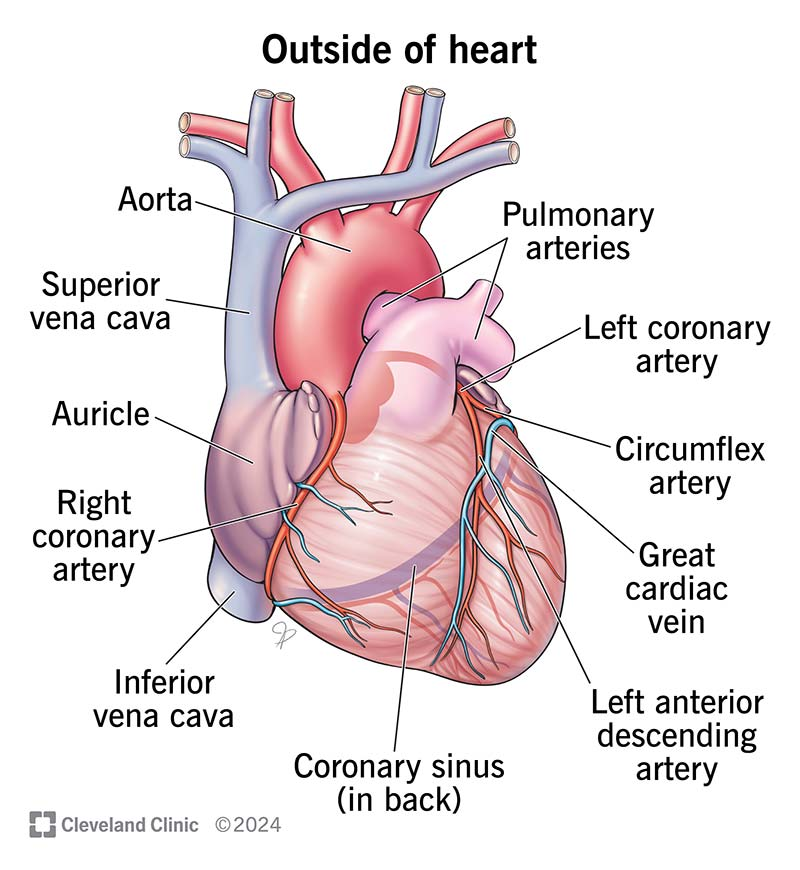

Module 1: Heart
Introduction of Heart
The heart is a muscular organ that pumps blood throughout the body, supplying it with oxygen and nutrients. The heart has four chambers, and is located in the middle of the chest, slightly behind and to the left of the breastbone. Function: The heart receives deoxygenated blood from the body, sends it to the lungs, receives oxygenated blood from the lungs, and then distributes the oxygenated blood throughout the body.
Read
Pause
Resume
Stop
Dictate
Heart Diagram

Components of Heart
The heart is a highly specialized organ with various critical components, each playing a vital role in ensuring proper blood circulation. These components include the chambers, valves, septa, muscles, and vessels. The four chambers—right atrium, right ventricle, left atrium, and left ventricle—are separated by one-way valves that ensure unidirectional blood flow. The tricuspid valve, pulmonary valve, mitral valve, and aortic valve each open and close to allow blood to flow between chambers and out to the body without backflow. The septa, or muscular walls, divide the heart into left and right halves, ensuring that oxygen-rich and oxygen-poor blood don’t mix. Additionally, papillary muscles and chordae tendineae support the heart valves, preventing them from inverting under pressure. The coronary arteries, which supply the heart muscle with oxygen-rich blood, and the pericardium, a protective sac that encases the heart, also play essential roles in maintaining the heart's health and function. Each of these components works together seamlessly to enable the heart’s continuous pumping action.
Read
Pause
Resume
Stop
Dictate
Components of Heart
Working of Heart
The heart's primary function is to serve as the body's central pump, moving blood throughout the circulatory system. This process begins when deoxygenated blood from the body enters the right atrium. The right atrium then pumps the blood into the right ventricle, which sends it to the lungs via the pulmonary artery for oxygenation. In the lungs, the blood releases carbon dioxide and picks up oxygen before returning to the left atrium. From there, the oxygenated blood is pumped into the left ventricle, which contracts powerfully to send the blood through the aorta and into the systemic circulation, delivering oxygen and nutrients to cells throughout the body. The heart's electrical conduction system regulates this process, ensuring that the heart contracts and relaxes in a coordinated rhythm. This electrical impulse begins in the sinoatrial (SA) node, often referred to as the heart's natural pacemaker, and travels through the atria to the atrioventricular (AV) node, down the bundle of His, and into the ventricles. This results in the familiar "lub-dub" sound of a heartbeat, which represents the closing of the heart valves as blood flows through the chambers. The entire cycle repeats continuously, ensuring that the body receives a constant supply of oxygenated blood to maintain vital functions.
Read
Pause
Resume
Stop
Dictate
Working of Heart
Your browser does not support the video tag.
Test Your Knowledge